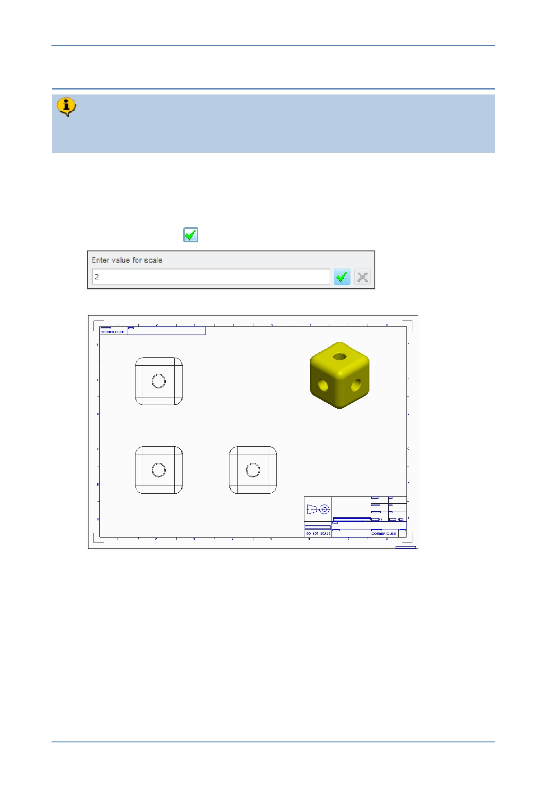

PTC Academic Program
Step 3: Changing the drawing scale
Automatic creation of the drawing will have chosen a scale to match the size of
the model to the paper size. The scale is displayed below the drawing.
1. Changing the drawing scale:
At the bottom left corner of the drawing screen, double click on SCALE: 1:1 .
In the Scale dialog at the top of the graphics area, enter a value for scale and
click Accept Value
to apply the new scale to the drawing.
© 2012 PTC
Creo Parametric 2.0 Primer
Page 93